Kiyomizu-dera (清水寺) * Word Heritage
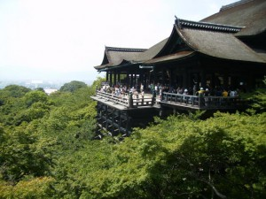

The name of the temple, “Kiyomizu”, stands for “pure water”. “Kiyo” is pure, and “mizu” is water.You’ll find behind the temple, at the foot of Mt. Otowa, fresh water gushing out of the hillside.It is called”Otowa-no-taki” This water has been worshiped for a long long time as the water to purify.
Drinking it purifies you, but choose only one stream (see the photo above). If you are greedy, your prayers won’t be heard. Be always modest…
The history of Kiyomizu-dera dates back to 778. It was founded by a monk named Kenshin from Kojima-dera in Nara. According to Kiyomizu-dera Engi (writing about its history), a divine revelation in his dream told Kenshin that he should travel toward the north along the Kizu River, seeking for a sacred spring. Following the revelation, he walked to the north and finally reached the waterfall at the foot of Mt. Otowa. And he met Gyoeikoji, who had been living there in a thatched hut and training for years and years. Gyoeikoji granted Kenshin a sacred tree telling that he should carve a statue of Senju Kan-non (Deity of Mercy) out of the wood to enshrine. Leaving the message, Gyoeikoji soon disappeared. Then Kenshin realized that Gyoeikoji was an incarnation of Kan-non, and he did what he was told to do.
Two years later (780), Sakanoue-no-Tamuramaro (Shogun of the early Heian period) visited Mt. Otowa on a hot summer day and found a stream of water. He was fascinated by the pureness of the water and walked on until he came to the source of water, where he met Kenshin. Telling that he came to the mountain to hunt deer, he was admonished not to kill animals in the sacred place where Kan-non lived. Sakanoue-no-Tamuramaro was deeply impressed by Kenshin’s words and became a devout believer of the Buddhist teachings. It was he who first contributed to the construction of some temple buildings, but the present buildings were rebuilt by Iemitsu Tokugawa (the third Tokugawa Shogun) in 1633.
More info click Kiyomizu-dera (English)
・Jishu-jinja (地主神社)
This shrine is situated behind Kiyomizu-dera. Many people may think it is part of Kiyomizu-dera (temple), but it is another shrine. The god of marriage, Ookuninushi-no-kami, is worshiped here. The spiritual stones called “Koiuranai-no-ishi,” or the love fortune-telling stones, are found sitting 10m away from each other. If you reach from one to the other with your eyes closed, you’ll find true love!
More info click Jishu-jinja
Ken-nin-Ji (建仁寺）
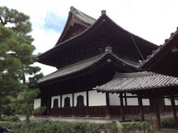
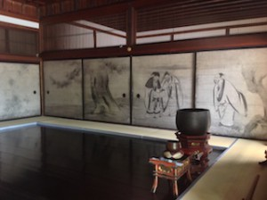
Ken-nin-Ji is the head temple of Rinzai-shu Ken-ni-Ji School. It was founded by Kaiki (patron of a temple in its founding), Minamoto no Yoriie, in 1202, and Kaizan (founding priest) Yousai. The temple was named after the era name of that time, Ken-nin (建仁). At the time of the foundation it complied three sects, Tendai-shu, Mikkyo, and Zen, but later it became the central school for Rinzai Zen.
Kaizan Yousai was born in 1141 in present-day Okayama prefecture, and at the age of 14 he took his tonsure. He mastered Tendai Mikkyo at Mt. Hieizan, and then traveled to China to learn Zen. He was the monk who first introduced Zen to Japan, and tea-drinking culture was also started by him. He brought to Japan not only the teaching of Zen but also tea seeds. He encouraged people to cultivate tea and popularized the practice of drinking green tea. And drinking tea must be accompanied with some sweets! Along with green tea, “manju” was also introduced at the same time. The origin of “Japanese manju” is like this; because Yousai was a really virtuous monk and adored by many people in China, when it was time for him to leave for Japan, some monks followed Yousai. One of the monks then introduced manju to Japan, but the manju he introduced to Japan was different from the manju in China. In China manju means so-cold “niku-man’, steamed buns with meat filling. However, in the Buddhist world eating meat is prohibited, so he used anko (red bean paste) instead of meat in Japan. This is why when we hear the word ‘manju’ in Japan we associate it with sweets but in China they think about meat.
You can tell how important Yousai Zen monk’s contributions to Japanese culture were.
・The Wind and Thunder Gods (風神雷神図屏風）* National Treasure
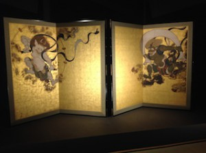
At the entrance of Ken-nin-ji Temple you will first find this famous folding screen, which is considered to be Tawaraya Sotatsu’s great masterpiece of his later years. He was a great painter in the Edo period.
・○△□ Garden (○△□乃庭)
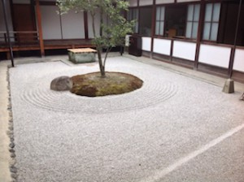
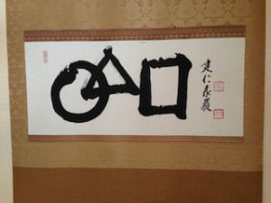
These simple shapes represent the origin of the cosmos. Circle is water, triangle is fire, and square is earth. And I also hear that these three shapes can form a Chinese character ‘命’ ( life).
・Twin Dragons in Hatto or Dharma Hall (法堂双龍図）
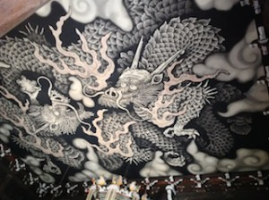
I was so amazed when I found this painting on the ceiling of the hall. It was really breathtaking. This painting was created to commemorate the 800-year anniversary of Ken-nin-ji temple in 2002 by Koizumi Jun. The size is 11.4m by 15.7m. It took the artist two years to complete this work, in the gymnasium of an elementary school in Hokkaido.
More Info: Click Ken-nin-Ji (English)
Around Ken-nin-ji temple there are many many more temples and shrines. Enjoy exploring in the small streets.
Yasui-Konpira-gu (安井金毘羅宮)
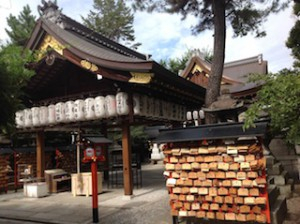
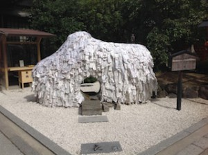
Its main enshrined deity is Emperor Sutoku (the 75th emperor/1119–1164). He was defeated in the battle for succession to the Imperial Throne and banished to present-day Sakaide City, Kagawa Prefecture. It is said that he was spending all his time at Konpira-gu Shrine, removing all his desires.
This is why Yasui-Konpira-gu has been widely worshiped as a place where people pray in the hope of cutting their connections with something they don’t want. Sickness, alcohol, smoking, gambling … all vices.
Emperor Sutoku also had to separate from his favorite mistress, Awa-no-naishi, and because of this sad experience he came to help us to cut all bad human relationships to find true love.
Of course, the couples who have found their best partners can visit this shrine. The good relationship won’t be disturbed. Your love will be more fortified.
More info click Yasui-kompira-gu (English)
Kyoto Ebisu-jinja (京都恵美須神社)
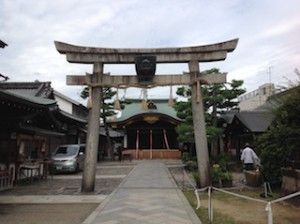

This shrine was founded in 1202, as a tutelary shrine of Ken-nin-ji temple. Ebisu is one of the seven gods of good fortune in Buddhism. He brings great prosperity to merchants. He is a god for business. ‘Ebisu-gao’ or Ebisu-face also means a smiley face! In the photo it is too small, but his face is on the shrine gate, and under it there is a small net hanging. You throw a coin, 10 yen or 100 yen, up in the net, and if the coin successfully gets in the net, your wish will be heard!
Rokuharamitsu-Ji (六波羅蜜寺)

Rokuharamitsu-Ji was built by Kuya, Prince of Emperor Godaigo. He spread Buddhist teachings among farmers for the first time, using a unique method. He was chanting a prayer to Buddha while dancing, and walking around in the city carrying the statue of the Eleven-faced Kannon that he made.
{kind=link}
Ichigan-ishi: next to the Kannon statue (photo), you’ll find a small stone pillar with a tire-like stone in it. Roll the stone toward you three times, and your wish will come true!
More info click Rokuharamitsu-Ji
Rokudo-chin-no-ji (六道珍皇寺)

This is the place where this world and the world to come are linked.You see something red in the middle of the bell tower (photo). You pull it and the bell rings. It is believed that the sound of the bell reaches the world of the dead.
Ono-no-Takamura, a man of culture in the early Heian period, had a big power in administering the affairs of state, meaning he was very close to the Imperial Court. There is an interesting episode about him. He was descending to the hell through the well every night and assisting the King of Hell. When we die, we all go to Enma-Diao (the King of Hell), who judges whether we should go to the heaven or the hell. It is said that many people were sent to the hell in spite of good deeds while they were alive, and therefore Ono-no-Takamura was defending those people there.
Beside the bell tower, there is a hall called Enma-do, which contains a wooden statue of the King of Hell that is believed to have been made by Ono-no-Takamura and that of Takamura himself. It is not open to public but you can look in at the window.
This temple is very mysterious…
More info click Rokudou
Marishiten-do (摩利支天堂）
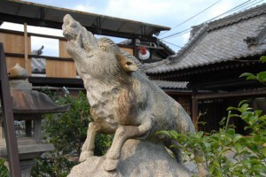

Marishisonten is a god of war in India, and in Japan it is considered as a guardian deity for samurai warriors. He has three faces and six arms and appears on a wild boar. You’ll find wild boar statues everywhere in the precincts. It is also believed that your wish will be heard if you walk around the hall praying hard.
More info click Marishiten
Yasaka-jinja (八坂神社）

It is said that this shrine was founded by Emperor Saimei in 656. It means it had already been here before the capital was moved to Heiankyo (Kyoto) from Heijyokyo (Nara).
Gion-matsuri or Gion Festival, one of the three most famous festivals in Japan, is held by Yasaka-jinja. When an epidemic raged throughout Japan, people put up 66 shields in Shinsen-en Temple representing 66 countries of Japan at that time, enshrined the god of Gion, carried Mikoshi (portable shrines), and prayed hard to remove disasters. This is the origin of this festival.
More info click Yasaka-jinja (English)
Yasaka Pagoda (Hokan-ji Temple) (八坂の塔）

This pagoda is said to have been created by Shotoku-taishi (Prince Shotoku) in 592. He had a revelation of Nyoirin-Kannon (the Bodhisattva of Compassion) in a dream. The Kannon told the prince to build a five-story pagoda and place Buddha’s ashes. However, there are several stories for the origin of this temple…The present tower was reconstructed in 1440.
Chugen-ji Temple (仲源寺)
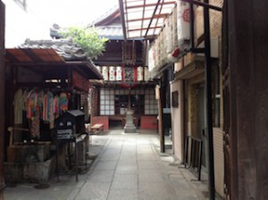
Jizo-bosatsu (Jizo Bodhisattva) was enshrined here to prevent the inundation of the Kamogawa River. People came to worship the Jizo as Ame-Yami Jizo (雨やみ地蔵). Ame (雨) is rain, and Yami (やみ) is stop. And a little later ‘Ameyami’ came to be pronounced, ‘meyami (目やみ)”. Me (目) is eye, and yami (yami) also means disease. This jizo is, thus, believed to have miraculous power against eye diseases.
Ishibe-koji (石塀小路）
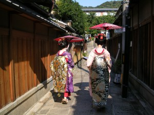
{kind=link}
Enjoy the stone path. You may encounter Maiko-san… Usually tourists are in a hurry visiting major sightseeing places but miss many nice small spots. If possible, it is better to have enough time to walk in Kyoto…
If you go a little farther, you can reach Rengo-in temple.
Sanjusangen-do (Rengeo-in) (三十三間堂) * National Treasure
{kind=link}
The origin of Sanjusangen-do was the Buddhist hall that the retired Emperor Go-Shirakawa constructed. He ordered Taira-no-Kiyomori to cooperate in providing building materials and completed the construction in 1165. Taira-no-Kiyomori was a military leader of those days, and this shows how powerful he was at that time. He established the first dominated administrative government in the Japanese history.
Sanjusangen-do contains one Senju-kannon statue (notional treasure) and 1,000 Kannon statues (important cultural property).
The name of this temple shows the number 33 (sanjusan in Japanese), which comes from the building architecture. The façade has 33 spaces between columns.
More info click Rengeo-in
Restaurants:
Gion Tsujiri : For Maccha lovers! You can enjoy a variety of green tea sweets. There are always many people waiting in front of the shop.

Hararyoukaku: It is a spice shop founded in 1703. Kuro Shichimi is recommended. It is a seasoning called seven flavored spices. Shichimi is usually red, but their shichimi is kuro (black). Good fragrance and good taste. Completely different from ordinary shichimi. We use it for French cooking too, fish and meat. It gives a dish an extra flavor. At the back of the shop they also serve special curry seasoned with Kuro Shichimi. It is spicy but delicious. If you like Japanese curry, why don’t you try?

Too many things to see and to eat!!!